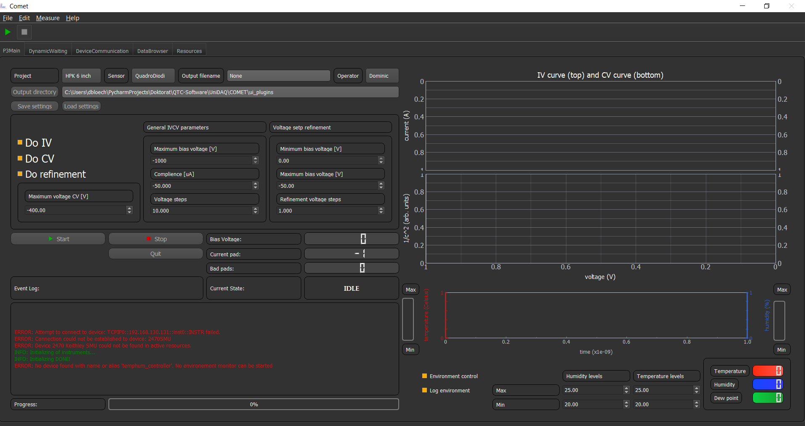

IVCV¶
The IVCV plugin is a plugin to conduct a Current-Voltage and a Current-Capacitance measurement. This GUI looks in its simples version like this:
In the top part of the GUI you can selcect the Project, Sensor, Operator and choose the file name the output file should have. Furthermore, you can choose the directory of the output, by either typing the path or by choosing via the button.
With the Buttons Save settings and Load settings you can save or load your IVCV settings, so you do not have to change them every time you start up.
The next part are the settings, on how exactly to conduct the measurement. The radio-Buttons can be switched on or off. This will direct the software to either do this part or not. The other spin boxes are for the specific settings on bias voltage and step sizes.
Note
You can choose different bias voltages for CV or IV measurement. So stop the CV measurement at 400 V but the IV measurement should continue to 1000 V. Or vice versa.
The voltage step refinement option lets you refine the step size in a specific region of the IVCV ramp. This is especially useful, if you want to investigate the behavior near the full depletion point, but you do not want the small step-size for the whole measurement, to safe time.
Next are comming the Start, Stop and Quit button. These buttons handles the start and the stop and quit of the program.
Hint
You can always quit the program via the option File in the header of the software!
Next is a event log. Here all important messages will be displayed which COMET encounters during operation. These events are color coded. Red means error, orange means warning and green are infos.
On the right side you see two plots, which will be populated if a measurement is conducted. Below that is the environment control which starts running on start up. Here you can choose the humidity and temperature levels/regions during measurement.
Important
If the environment levels are not reached, COMET will wait for the environment to reach these levels before it proceeds with the measurement.
Since COMET heavily rely on GUI plugins you can have different GUI which does basically the same thing like this one. One of those is the IVCV_QTC GUI plugin which looks pretty similar to the above shown one

The difference here is that instead of the settings widgets, a table control widget is placed. The settings widget for IVCV is here in a separate tab, since for the QTC a stripscan can be conducted as well, see Stripscan.